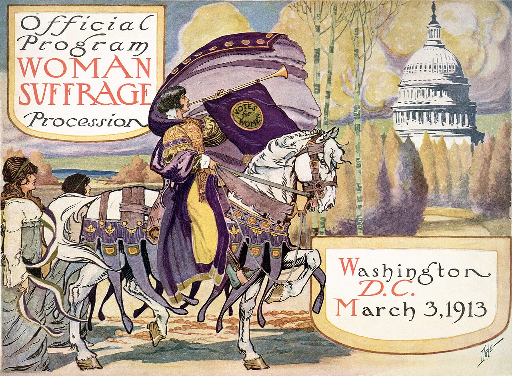

Before anyone read a banner, the picture had already made the argument.
Debate this
"A protest that wasn't designed to be photographed might as well not have happened."
Goal of today
What you'll walk out with
Today you'll take apart two ideas that change how you read every march, poster, and feed: visual rhetoric (an image or a color can make an argument on its own) and spectacle (staging something so big the media has to carry it for you). We'll use one case, the 1913 suffrage procession, to see design historian Teal Triggs's claim in action: the look of a thing is part of the argument, not the wrapper around it. Thursday's module goes deeper. Today we dig in together.
Woman Suffrage Procession, Washington, D.C., March 3, 1913 (Library of Congress).
Read the picture
What is this picture arguing?
Not the words on any banner. The white robes, the white horse, the crown, the calm order. What did they want you to feel before you read a thing?
Name it
Visual rhetoric
An image, a color, a layout, or a designed object making an argument, the same way words do. It persuades before, and sometimes instead of, the text.
Spectacle
Staging something so large and striking that the media has no choice but to look, and to spread it for you. Not a stunt for its own sake: a spectacle with a clear demand behind it.
Design historian Teal Triggs studied protest posters, punk zines, and movement graphics and flipped the usual assumption. We tend to think the argument lives in the words and the picture just illustrates it. She shows the reverse: the look of a thing, its color, its costume, its polish or its rough edges, is itself claiming who these people are and what they want. Milholland in white on a white horse argued "we are dignified, and we belong" before a single banner was read.
The real question
1913. No TV, no internet, no phones. So why pour months of work into how the march LOOKED?
Alice Paul spent a year on costumes, colors, floats, and a pageant. What was she buying with all that effort?

The official program, March 3, 1913, staged the day before Wilson's inauguration (Library of Congress).
The 1913 Procession (organized by Alice Paul, age 28): more than 5,000 marchers, color-coded sections, state floats, a giant Liberty Bell, and an allegorical pageant on the Treasury steps. Timed for the day before Wilson's inauguration, when every reporter in the country was already in town.
Spectacle + the mob attack it provoked = front pages, sympathy, hearings.
A hostile crowd surged in, jeering and grabbing marchers while police stood by. In print, orderly women in white being mobbed made the marchers sympathetic and their attackers look like brutes. The picture did the arguing. Even the violence became part of the message.
The suffragists never bought that coverage. The design of the event earned it. Spectacle turns your opponents' own media into your printing press.
A harder truth
Who gets to be in the picture?
To keep white Southern support, organizers told Black suffragists to march together at the back, out of the main image. Every choice about what a movement shows is also a choice about who is seen. What does that cost, and who pays it?
Here's what happened
Ida B. Wells, 1913. Journalist, anti-lynching crusader, and founder of a Black women's suffrage club in Chicago, she came to march with her Illinois delegation and was told to wait at the back. She stepped aside. Then, as her Illinois delegation passed, she walked out of the crowd and took her place in it, in the picture, where she had earned the right to be.
No speech. The act itself was the argument.Visual rhetoric is never only about what you show. It is about who you let be seen. Brilliant design and real exclusion sat in the same parade.
Bring it home
Where do you see visual rhetoric and spectacle right now?
What's the modern white-robes-on-a-horse? Think of a march, a logo, a color everyone wears, a staged image built to be photographed from above.
The catch
Spectacle gets you SEEN. Does being seen mean you won?
The 1913 march made the papers. Women didn't get the federal vote until 1920. So what does a spectacle actually buy, and what does it not?
Workshop
Design one wordless argument.
Each group takes one cause, a campus food pantrya local creek cleanupa tenants' uniona night-bus safety pusha used bookstore trying to survive and designs ONE visual asset for it (a poster, a pin, a sash, a staged photo, a profile frame). No words allowed in the design. Fill all four boxes, then pick a spokesperson to report back.
The job
Pick one: Dignify (change how outsiders see you), Unite (make members recognize each other), or Disrupt (force the public to look). Which does this cause most need?
The frame
Describe exactly what's IN the image: the color, the object, the staged moment. Be specific enough that we could build it.
The wordless claim
What does this design argue with zero text? Say the sentence it makes a viewer feel without printing it.
The trade
What does this choice cost? Who might it exclude, or who could read it the wrong way?
Your cause · Field Notebook
Open your Field Notebook. Not what your cause SAYS. What it LOOKS like.
Work these three on your own, then we'll hear a few.
What does your cause look like right now? Name its color, its symbol or logo, its repeated image, or admit it has none, which is also a message about it.
Dignify, Unite, or Disrupt: which does your cause most need right now? Design one wordless asset that does that job. Name exactly what's in the frame and the claim it makes.
The Wells question: whose face is in your cause's picture right now, and who gets left out of the frame?
Where we go from here
The picture argues first.
Thursday's module: the real photographs and the official program up close, how suffragists engineered the picture, and a design tool where you judge what each move actually does. Bring the notebook. We'll reconvene at the end to share.